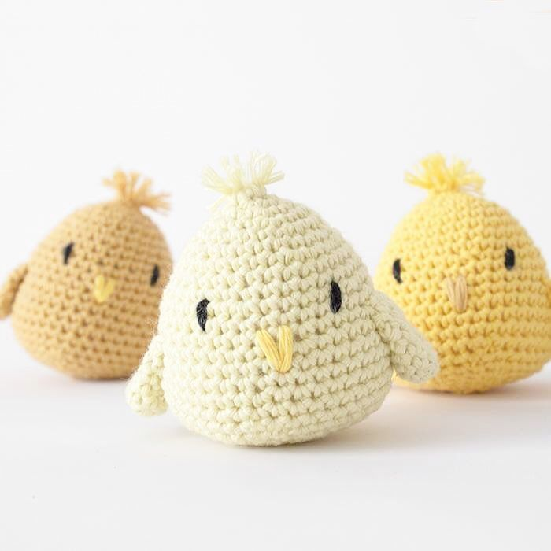

Hjemmelavet påskekyllinger
Dette er en video hvor jeg viser hvordan jeg laver en taske. Jeg starter med først at sy blah blah Det er en supernemt måde at lave den her ting på og jeg har selv lavet mange ting som minder om min mor viste mig engang…